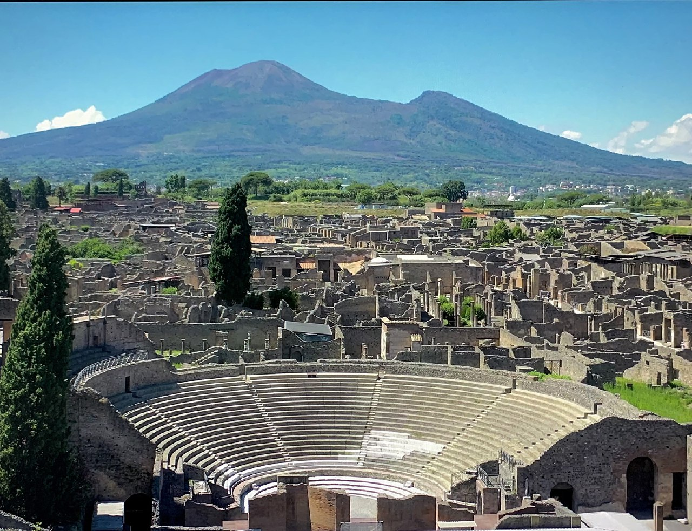

Mattina & Pomeriggio
Pompei & Napoli Sotterranea
Una giornata che affonda le radici nel tempo: dagli scavi di Pompei, cristallizzata dal Vesuvio nel 79 d.C., alle viscere di Napoli Sotterranea, un labirinto di cunicoli greci e romani sotto la città moderna. L'ultima visita guidata di Napoli Sotterranea è alle 18:00.

Scavi di Pompei
Patrimonio UNESCO · 79 d.C.

Napoli Sotterranea
Ultima visita ore 18:00
💶 Biglietti Pompei: Ingresso intero 25€, ridotto 2€ per cittadini UE under 25.
🕐 Orari Pompei: Ingresso dalle 9:00.
🕐 Orari Pompei: Ingresso dalle 9:00.
💶 Biglietti Napoli Sotterranea: I salta-fila al momento risultano esauriti.
🕐 Orari Napoli Sotterranea: Ultimo tour della giornata alle 18:00.
🕐 Orari Napoli Sotterranea: Ultimo tour della giornata alle 18:00.
💡 Consiglio: Arriva a Pompei all'apertura (9:00) per evitare le code e il caldo. Porta scarpe comode — il sito si estende su oltre 44 ettari. Per Napoli Sotterranea, la temperatura è costante a ~15°C: porta un maglione.
Sera
Il Lungomare & il Centro Storico
Napoli al tramonto è uno spettacolo irripetibile. Da Piazza del Plebiscito, cuore istituzionale della città, alla maestosa Galleria Umberto I, fino al Lungomare Caracciolo con il Castel dell'Ovo che si staglia sul mare.

Piazza del Plebiscito
Cuore di Napoli

Galleria Umberto I
1891 · Stile Liberty

Castel dell'Ovo
Lungomare Caracciolo
🍕 Cena: Dopo la passeggiata, concediti una pizza verace in uno dei locali storici di via Toledo o nei pressi di Piazza Bellini. Non serve prenotare — il rito si ripete da secoli.